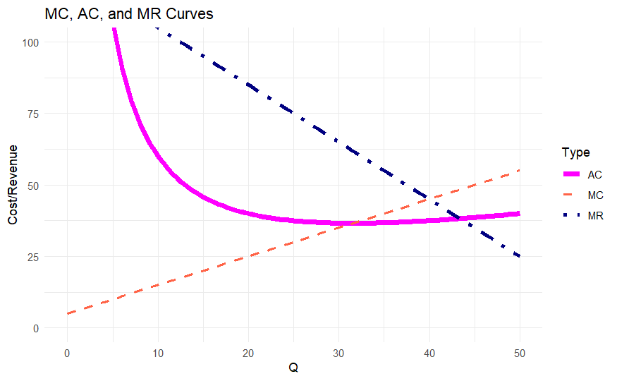
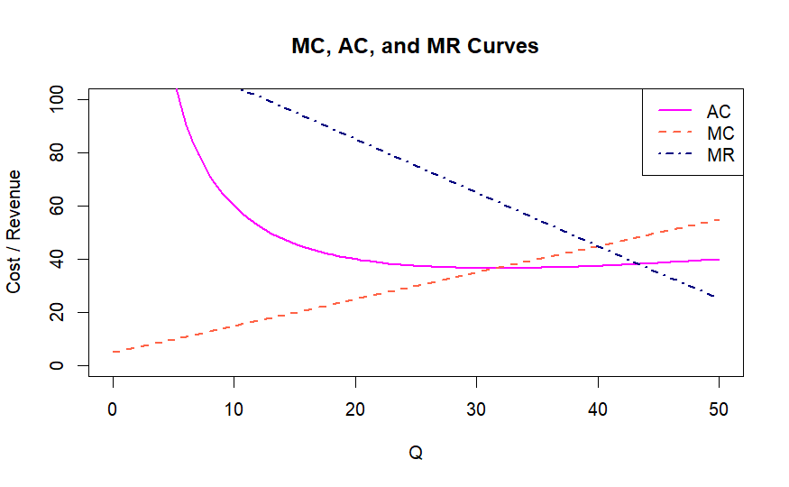
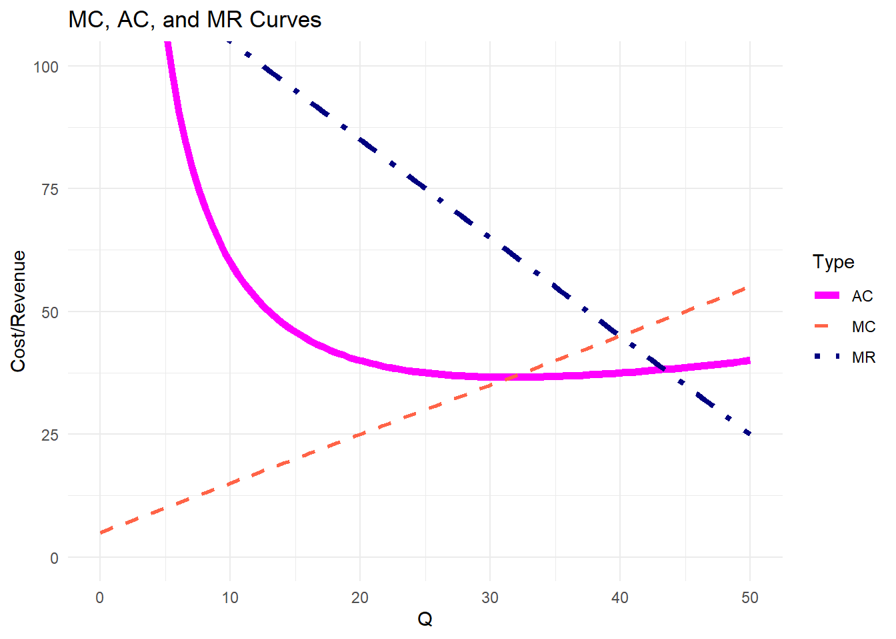
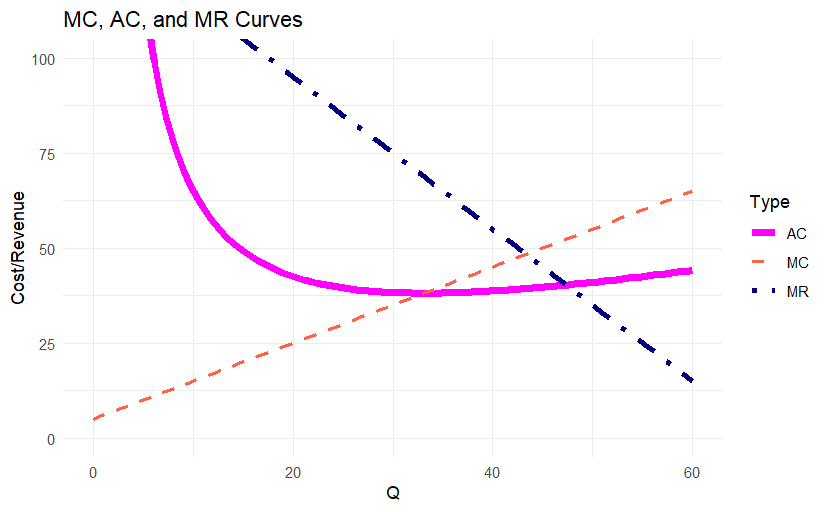
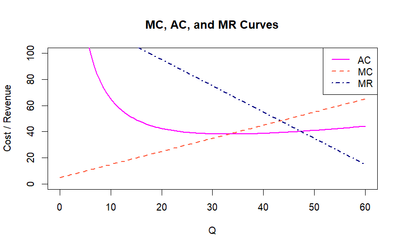
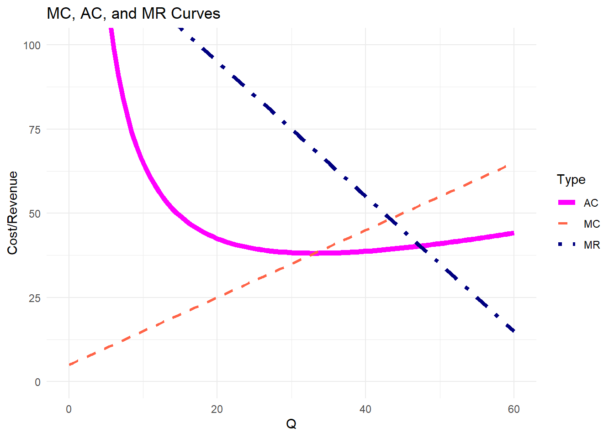
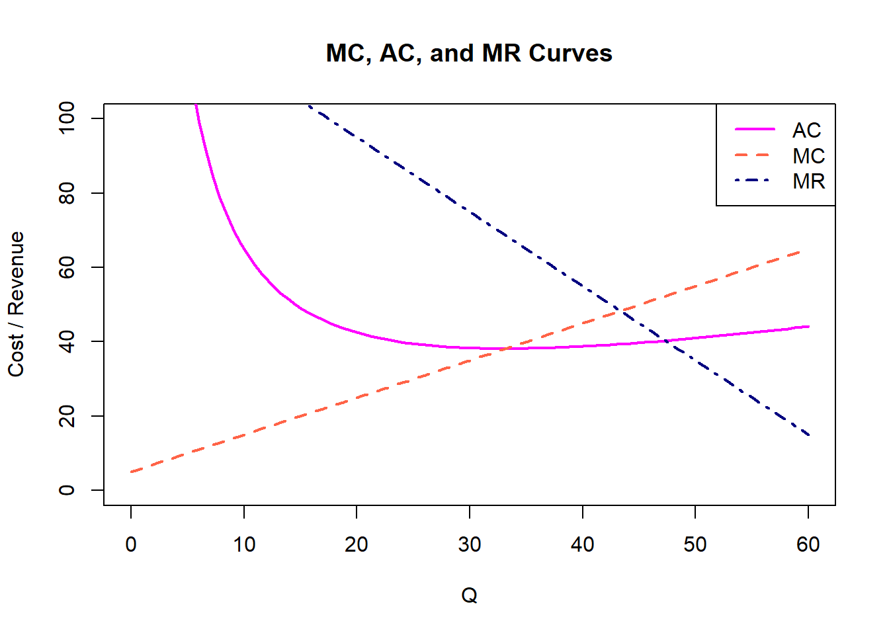

9 Answer Key
9.1 Introduction
Here are the final answers for the previous Weekly Exercises. These are combinations of the codes on how to write the Final Answers and the R codes. This will be particularly useful when you do your Problem Sets. However, this is the only time I will provide this Answer Key. For the succeeding topics/weekly exercises, no answer key will be given.
9.2 Weekly Exercise 1
9.2.1 Final Answers
I will place what you put within the $$.
- f’(x) = 0
- f’(x)=4x^3
- f’(x)=44x^3
- f’(x)=2x+5
- f’(x)= 2x-10
- C’(q) = 3q^2-8q+6
- f’(x)=2e^{2x}
- f’(x)=\frac{2}{x}
- R’(q)=20-4q
- AC’(q) = 10q-20
- AP’(L) = 10-2L
- f’(x) =
9.2.2 R Codes
- \(f(x)=101314\)
## [1] 0- \(f(x)=x^4\)
## 4 * x^3- \(f(x)=11x^4\)
## 11 * (4 * x^3)Aside from you calculating the final answer, another option is to install and load the
Ryacaspackage and useSimplify
9.2.2.0.1 If Using Simplify from Deriv :
- Create an object for the equation we differentiate.
- Create an object so we can transform the answer into an expression.
- Use the
Simplify; there might be otherSimplifyfrom other packages so we will use this formation:package::command
## expression(44 * x^3)- \(f(x) = x^2+5x-9\)
## 2 * x + 5- \(f(x) = x^2-10x+20\)
## 2 * x - 10- \(C(q)=q^3 - 4q^2 + 6q+50\)
## 3 * q^2 - 4 * (2 * q) + 6- \(f(x)=e^{2x}\)
exp is the “e” we see in the equation.
## expression(2 * exp(2 * x))Everything inside
exp()is in the exponent. Outside, you multiply. So final answer is \(2e^{2x}\)
- \(f(x)=ln(3x^2)\)
## expression(2/x)- \(R(q)=q(20-2q)\)
## (20 - 2 * q) - q * 2- \(AC(q)=5q^2+20q\)
## 5 * (2 * q) + 20- Total Product
\(TP(L)=10L^2 -L^3\)
a. Get AP(L)
\(\frac{TP(L)}{L}\)
\(AP(L)=\frac{10L^2 - L^3}{L}\)
## expression(10 - 2 * L)- \(f(x)=ln(1+x^3)\)
## expression(3 * (x^2/(1 + x^3)))9.3 Weekly Exercise 2
9.3.1 Final Answers
I will put what is written between $$
h’(x)=\frac{4}{7}x^{\frac{5}{7}}
f’(\theta) = + 1 + 2\theta e^{\theta^2}
f’(\gamma) = OR
f’(\gamma) =
f^(6)(x) = 40320x+5040
MR=125-2Q
TR(40) = 3400; MR(40)= 45
MC = 5+Q; AC =
TC(40)= 1500; MC(40)= 45; AC(40)= 37.5;
ggplot2:

Base R:

9.3.2 R Codes
9.3.2.1 Preliminaries
9.3.2.1.1 Cleaning Environment
## used (Mb) gc trigger (Mb) max used (Mb)
## Ncells 2097937 112.1 3360602 179.5 3360602 179.5
## Vcells 4672312 35.7 10146329 77.5 10146160 77.59.3.2.1.2 Pre-plotting Check
user <- file.path(Sys.getenv("USERPROFILE"), "R", "win-library", "4.5")
dir.create(user, recursive = TRUE, showWarnings = FALSE)
.libPaths(c(user, .libPaths()))
ok <- tryCatch({
library(ggplot2)
ggplot(data.frame(x=1:5, y=rnorm(5)), aes(x,y)) + geom_point()
TRUE
}, error = function(e) FALSE)
if (!ok) {
install.packages("rlang", lib = user_lib)
ok <- tryCatch({
library(ggplot2)
ggplot(data.frame(x=1:5, y=rnorm(5)), aes(x,y)) + geom_point()
TRUE
}, error = function(e) FALSE)
}
if (!ok) plot(1:5, rnorm(5))If ok Values turn out to be TRUE, you can use
ggplot2. If ok Values turn out to be FALSE, you use Base R plotting.
9.3.2.1.3 Load Libraries
- \(h(x) = 2x^{\frac{2}{7}}+9\)
## function (x)
## 0.571428571428571/x^0.714285714285714You can present this as decimals or fractions. You can use MASS::fractions() to get the fractions
## [1] 4/7## [1] 5/7- \(f(\theta) = ln(\theta)+e^{\theta^2}+e^{ln(\theta)}\)
## function (theta)
## (1 + exp(log(theta)))/theta + 2 * (theta * exp(theta^2))Writing the expression:
\(\frac{1+exp(log(\theta))}{\theta} + 2 \cdot (\theta \cdot exp(\theta^2))\)
Always remember: \(exp(log(x))=x\) because exp() and log() are inverse functions, so:
\(\frac{1+\theta}{\theta}+ 2 \cdot (\theta \cdot exp(\theta^2))\)
Remember your algebra. Now, we have:
\(\frac{1}{\theta} + 1 + 2\theta e^{\theta^2}\)
- \(f(\gamma)=\sqrt{\sqrt{\sqrt{\sqrt{\sqrt{\gamma+1}}}}}\)
## [1] 0.03125## function (gamma)
## 0.03125/(1 + gamma)^0.96875## [1] 1/32## [1] 31/32- \(f(x)=8x^7+7x^6+6x^5+5x^4+4x^3+3x^2+2x+1\) (6th order)
## function (x)
## 40320 * x + 5040II. A firm faces the total revenue \(TR=125Q-Q^2\)
a. Find MR in terms of Q
## function (Q)
## 125 - 2 * Qb. What are TR and MR if Q is 40?
## [1] 3400## [1] 45c. If \(TC=0.5Q^2+5Q+500\), what is MC and AC?
## function (Q)
## 5 + Q## function (Q)
## TC(Q)/QOR
## function (Q)
## 0.5 * Q^2 + 5 * Q + 500/Qd. What are TC, MC, and AC if Q is 40?
## [1] 1500## [1] 45## [1] 37.5III. Using TR and TC from previous numbers, Visualize the MR, MC, and AC in one plot;
a. Q_vals should be until 50
b. MC should be Dashed
c. MR should be DotDashed
d. AC should be Solid Thick line
e. Label the axes;
f. Label as “MC, AC, and MR Curves”
9.3.2.1.4 ggplot Graph
9.3.2.1.4.1 Define the functions
## function (Q)
## 5 + Q## function (Q)
## 125 - 2 * Q## function (Q)
## TC(Q)/Q9.3.2.1.4.3 Create Data Frame
df1<-data.frame(
Q=rep(Q_vals,3), #need to repeat Q_vals 3 times to create our 3 curves/lines
Value=c(MC(Q_vals), AC(Q_vals), MR(Q_vals)), #to "incorporate" the Q_vals to MC, AC, and MR
Type= rep(c("MC", "AC", "MR"), each=length(Q_vals))
)Always check your data frame; should have 100 observations each for MC, AC and MR.
p3<-ggplot(df1,
aes(x=Q, y=Value, color=Type, linetype = Type, size = Type))+
geom_line()+
scale_color_manual(values=c("MC"="tomato", "AC" = "magenta", "MR" = "navy"))+
scale_linetype_manual(values=c("MC"="dashed", "AC"="solid", "MR"="dotdash"))+
scale_size_manual(values=c("MC"=1, "AC"=2, "MR"=1.5))+
labs(title = "MC, AC, and MR Curves", x="Q", y="Cost/Revenue")+
coord_cartesian(ylim=c(0,100))+
theme_minimal()
print(p3)
You can copy the image and paste in Final Answers
9.3.2.1.5 Base R Graph
9.3.2.1.5.3 Prepare the data
dfb<-data.frame(
Q=rep(Q_base,3),
Value=c(MC(Q_base), AC(Q_base), MR(Q_base)),
Type=rep(c("MC","AC","MR"), each = length(Q_base))
)y_min<-0
y_max<-100
#png("MRACMC_bplot.png", width= 700, height = 500) #to save in your directory
p3b<-plot(dfb$Q, dfb$Value, type = "n",
xlab = "Q",
ylab = "Cost / Revenue",
ylim = c(y_min, y_max),
main = "MC, AC, and MR Curves")
lines(dfb$Q[dfb$Type == "AC"],
dfb$Value[dfb$Type == "AC"],
col = "magenta", lwd = 2, lty = 1)
lines(dfb$Q[dfb$Type == "MC"],
dfb$Value[dfb$Type == "MC"],
col = "tomato", lwd = 2, lty = 2)
lines(dfb$Q[dfb$Type == "MR"],
dfb$Value[dfb$Type == "MR"],
col = "navy", lwd = 2, lty = 4)
legend("topright",
legend = c("AC", "MC", "MR"),
col = c("magenta", "tomato", "navy"),
lwd = c(2, 2, 2),
lty = c(1, 2, 4))
You can also copy the image and paste in Final Answers
9.4 Weekly Exercise 2.1
9.4.1 Final Answers
h’(x) = \frac{1}{4(x^{}
C’(\gamma)=\frac{1}{\gamma}+\gamma^{ln(\gamma)}(1+2ln(\gamma))
f’(\theta)=\frac{1}{16(1+\theta)^{\frac{15}{16}}
f^(5)(x)=20160x^2+5040x+720
MR=135-2Q
TR(45)= 4050; MR(45)=45
AC=\frac{0.5Q^2+5Q+550}{Q}
MC=5+Q
- TC(45)=1787.5 ; MC(45) = 50; AC(45)= 39.72
ggplot2:

Base R:

9.4.2 R Codes
9.4.2.1 Preliminaries
9.4.2.1.1 Cleaning Environment
## used (Mb) gc trigger (Mb) max used (Mb)
## Ncells 2099329 112.2 3360602 179.5 3360602 179.5
## Vcells 4674512 35.7 10146329 77.5 10146160 77.59.4.2.1.2 Pre-plotting Check
user <- file.path(Sys.getenv("USERPROFILE"), "R", "win-library", "4.5")
dir.create(user, recursive = TRUE, showWarnings = FALSE)
.libPaths(c(user, .libPaths()))
ok <- tryCatch({
library(ggplot2)
ggplot(data.frame(x=1:5, y=rnorm(5)), aes(x,y)) + geom_point()
TRUE
}, error = function(e) FALSE)
if (!ok) {
install.packages("rlang", lib = user_lib)
ok <- tryCatch({
library(ggplot2)
ggplot(data.frame(x=1:5, y=rnorm(5)), aes(x,y)) + geom_point()
TRUE
}, error = function(e) FALSE)
}
if (!ok) plot(1:5, rnorm(5))If ok Values turn out to be TRUE, you can use
ggplot2. If ok Values turn out to be FALSE, you use Base R plotting.
9.4.2.1.3 Load Libraries
- \(h(x)=2x^{\frac{1}{8}}+10\)
## function (x)
## 0.25/x^0.875## [1] 1/4## [1] 7/8- \(C(\gamma)=\gamma^{1+ln(\gamma)}+ln(\gamma)\)
## function (gamma)
## {
## .e1 <- log(gamma)
## 1/gamma + gamma^.e1 * (1 + 2 * .e1)
## }Replace .e1 with log(gamma) so equation looks like this:
\(\frac{1}{\gamma}+\gamma^{ln(\gamma)}(1+2ln(\gamma))\)
- \(f(\theta)=\sqrt{\sqrt{\sqrt{\sqrt{\theta+1}}}}\)
## [1] 0.0625## function (theta)
## 0.0625/(1 + theta)^0.9375## [1] 1/16## [1] 15/16- \(f(x)=8x^7+7x^6+6x^5+5x^4+4x^3+3x^2+2x+1\)
## function (x)
## 720 + x * (20160 * x + 5040)II. \(TR=135Q-Q^2\)
a.
## function (Q)
## 135 - 2 * Qb.
## [1] 4050## [1] 45c. \(TC=0.5Q^2+5Q+550\)
## function (Q)
## 5 + Q## function (Q)
## TC(Q)/Q## function (Q)
## (0.5 * Q^2 + 5 * Q + 550)/Qd.
## [1] 1787.5## [1] 50## [1] 39.72222IV. a. Q_vals should be until 60
b. MC should be Dashed
c. MR should be DotDashed
d. AC should be Solid Thick line
d. Label the axes; y-axis as Cost/Revenue; x-axis as Quantity (Q)
e. Label the plot as “MC, AC, and MR Curves”
9.4.2.1.4 ggplot Graph
9.4.2.1.4.1 Define the functions
## function (Q)
## 5 + Q## function (Q)
## TC(Q)/Q## function (Q)
## 135 - 2 * Q9.4.2.1.4.3 Create Data Frame
df1<-data.frame( Q=rep(Q_vals,3), #need to repeat Q_vals 3 times to create our 3 curves/lines
Value=c(MC(Q_vals), AC(Q_vals), MR(Q_vals)), #to "incorporate" the Q_vals to MC, AC, and MR
Type= rep(c("MC", "AC", "MR"), each=length(Q_vals))
)Always check your data frame; should have 100 observations each for MC, AC and MR.
p3.2.1<-ggplot(df1,
aes(x=Q, y=Value, color=Type, linetype = Type, size = Type))+
geom_line()+
scale_color_manual(values=c("MC"="tomato", "AC" = "magenta", "MR" = "navy"))+
scale_linetype_manual(values=c("MC"="dashed", "AC"="solid", "MR"="dotdash"))+
scale_size_manual(values=c("MC"=1, "AC"=2, "MR"=1.5))+
labs(title = "MC, AC, and MR Curves", x="Q", y="Cost/Revenue")+
coord_cartesian(ylim=c(0,100))+
theme_minimal()
print(p3.2.1)
You can copy the image and paste in Final Answers
9.4.2.1.5 Base R Graph
9.4.2.1.5.3 Prepare the data
dfb<-data.frame(Q=rep(Q_b,3),
Value=c(MC(Q_b), AC(Q_b), MR(Q_b)),
Type=rep(c("MC","AC","MR"), each = length(Q_b))
)y_min<-0
y_max<-100
#png("MRACMC_bplot2.1.png", width= 700, height = 500)
p3b.2.1<-plot(dfb$Q, dfb$Value, type = "n",
xlab = "Q",
ylab = "Cost / Revenue",
ylim = c(y_min, y_max),
main = "MC, AC, and MR Curves")
lines(dfb$Q[dfb$Type == "AC"],
dfb$Value[dfb$Type == "AC"],
col = "magenta", lwd = 2, lty = 1)
lines(dfb$Q[dfb$Type == "MC"],
dfb$Value[dfb$Type == "MC"],
col = "tomato", lwd = 2, lty = 2)
lines(dfb$Q[dfb$Type == "MR"],
dfb$Value[dfb$Type == "MR"],
col = "navy", lwd = 2, lty = 4)
legend("topright",
legend = c("AC", "MC", "MR"),
col = c("magenta", "tomato", "navy"),
lwd = c(2, 2, 2),
lty = c(1, 2, 4)) 